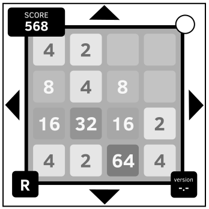

A Respeito do 2048
Pera... esse jogo foi baseado em outro jogo não foi? Tipo o “1024” ou algo assim?
Como Jogar 2048
Use os botões de seta no módulo* para mover todos os quadrados na grade.
Quadrados se moverão até eles baterem na borda ou em outro quadrado. Porém, se um quadrado colidir com outro quadrado do mesmo valor, eles se tornarão um quadrado com o dobro do valor.
Desarmando o Módulo
Para desarmar o módulo, junte quadrados até você conseguir um quadrado de valor 256. O módulo se desarmará automaticamente quando você conseguir esse quadrado.
Porém, você pode continuar jogando o jogo após desarmar o módulo para tentar chegar em quadrados de valor maior, tal como 2048.
Não deixe seus movimentos acabarem. Caso isso aconteça, o módulo resetará.
Se você achar que seus movimentos vão acabar, ou se precisar começar de novo, você pode apertar o botão quadrado de reset* (marcado com um "R") para resetar o módulo a uma posição inicial sem nenhuma penalidade.
*Alternativamente, você pode usar as setas do seu teclado para mover os quadrados, e usar a tecla R para resetar.